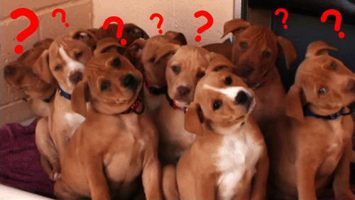

Color scheme ideas: Black on colors. hell yea. Imagine doing the nth child and doing alternate colors for the text. Also use the P tage and span tag to seperate idea topics to form more of a structure. And keep in mind to keep it real simple and post images more and popping words.
Getting ideas for posting content to twitch and such. Thinking about streaming the morning and nights on twitch and youtube/ snapchat throughout the day.
Also getting the hang of gimp and github. If i keep this up we will be doing good i think Need to finish the routine so I can pick storm up. Peace for now.
Put social links and such in footer area. Mess with the html background img Just rolling with what I got so I can put other pages on that are important to the complete project. I need to work one thing at a time for this page to come together. Can't get caught up on one color. The colors will come.
I want the tomorrow to be colorful Today to be foresty and ideas to be a mix and support to not be green. Actually don't like the way support looks at all. And lets get the Checklist page started. I'm thinking it should be like an actual check list... What if I used the format for this page for other pages just with the actual topics in mind? Hell yea man.
Really contemplating hard about how to livestream.
I want to do it outside but I know the battery life won't be long.
So I'm thinking about just doing small streams but many of them.
I could sneak out of work and do a meditation class in the forest somewhere.
But where do I stream at?
Ok, say I stream my niche theme on twitch, and post the updates on Youtube/ socialmediates.
That would probably work.
And then I would like to catch up with the audience at the end of the day as I write my blog posts.
Thinking about putting css grid for the schedule Tomorrow page.
The today page will be the update video on youtube and such and i can write a message and a picture.
So you have words, video and images for the today update page.
Thats dope.

Lol reading this is going to be funny because it's just listing things but in paragraph form.
I'm hyped about this webpage.
This is the day that determines tomorrow.
There are all kinds of things I can do to feel successful whenI go to sleep in 12 hours.
Lets go.
Consider keeping the list style by using spans as the li's.
Also you can just manipulate the border radius to give it that feel.
I feel like this page could be cool if I developed some attractive structure to it.
I want to make a page that lists my activities that make me feel successful.
Maybe the first letter of the list can be capitalized bold?
How about a Archive page?
So instead of deleting the content, put it aside on a seperate page.
Use Youtube to stream outside and Twitch for inside.
What's up with the logo? :(